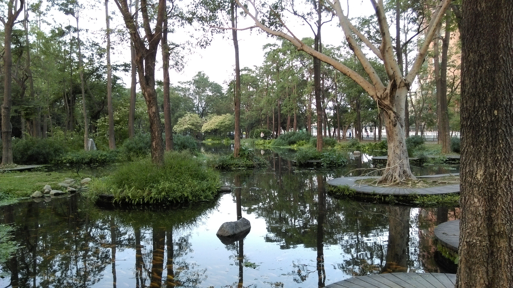
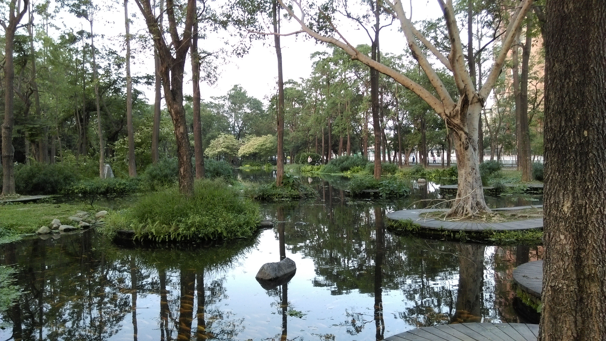

大東藝術文化中心為前大東國小之現址,藝術中心涵蓋800席多功能演藝廳和半戶外劇場，共有演藝廳、展覽館、藝術教育中心、圖書館等四棟建築， 其中圖書館將是台灣首座藝術圖書館,藝術中心更常有各種戶外免費藝術展演,是假日休閒及共享藝術盛宴的好去處。
大東濕地公園 

大東濕地公園（原名中正公園）創建於1981年，位於大東文化藝術中心對面，經過多年綠美化，園內林木蒼鬱，內有設施包括老人活動中心、休息涼亭、、慈恩圖書館等，是休閒好地方。